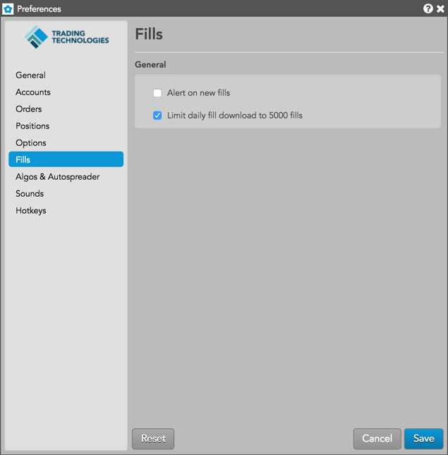

| Preference | Description |
|---|---|
| Alert on new fills | Displays a Fill Alerts widget when new fills are received. |
| Limit daily fill downloads to 5000 | (Enabled by default) Uncheck to remove the daily limit for downloading fills. Note that if you elect to remove the current restriction, an extreme numbers of fills could negatively impact memory usage and degrade application performance. |